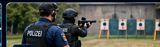

Aktive Notrufe
0 offenSchichtsteuerung
FrühschichtFahrzeuge & Kräfte
BereitschaftHamburg · Gesamtes Bundesland
Landesweite Offline-Übersicht · Standorte und Anfahrten sind simuliert, keine reale Ortung oder Straßen-Navigation.
Personal und Ausrüstung
Porträts & individuelle AusrüstungTippe auf eine Einheit. Danach kannst du einzelne Beamte ansehen, ihre Bilddarstellung ändern und Ausrüstung kaufen oder anlegen.
Ausbildung & Weiterbildung
Über mehrere Spieltage
Ausbildungen sind freiwillig. Eine Einheit ist während ihrer Fortbildung nicht disponierbar. Nach jedem abgeschlossenen Spieltag wird der Fortschritt aktualisiert.
Einsatzeditor
Eigene Einsatzvorlage inklusive Folgeereignis. Vorlagen kannst du direkt in der Schicht auslösen.
Einheiteneditor
Datenverwaltung
Spielstände werden automatisch lokal gespeichert. Exportierte JSON-Dateien enthalten auch eigene Szenarien und Personalprofile.
Karriere & Schichtverlauf
Jeder abgeschlossene Dienst wird im Tagebuch gespeichert. Im Sandbox-Modus kannst du die Regeln für zukünftige Schichten ändern.